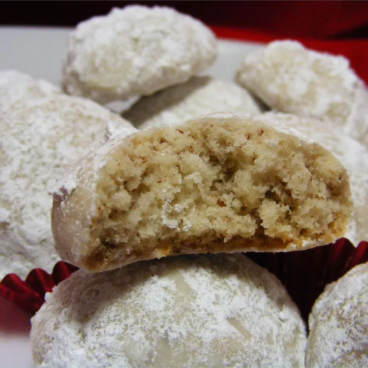

Butterball Cookies

Description
These butterball cookies are rich, buttery, and a real treat for the holidays!
Ingredients
- 1 cup butter
- ½ cup white sugar
- 2 cups all-purpose flour
- 1 cup chopped pecans
- ⅓ cup confectioners' sugar for decoration
Steps
- Preheat the oven to 325 degrees F (165 degrees C).
- Beat butter in a large bowl on medium speed for 30 seconds. Add sugar, beat until fluffy. Add flour and beat at low speed until well blended; stir in pecans.
- Shape cookie dough into one inch balls and place on an ungreased cookie sheet. Bake in the preheated oven until edges are lightly browned, about 20 minutes. Transfer cookies onto a wire rack to cool.
- Roll cooled cookies in confectioners' sugar.
- Enjoy!
Back home